Nội dung bài học
Chúng ta đã thêm một Controller và một View đến dự án MVCBooks. Trong bài này chúng ta sẽ thêm các lớp để quản lý các đối tượng sách trong cơ sở dữ liệu và các lớp này thuộc về phần Model trong mô hình MVC.
Giống như khi làm việc với các ứng dụng trong .NET Framework, các lớp làm việc với cơ sở dữ liệu trong .NET Core sẽ thông qua công cụ trung gian là Entity Framework Core (EF Core). EF Core cho phép chúng ta ánh xạ giữa các lớp từ mã chương trình và các bảng trong cơ sở dữ liệu giúp cho việc viết mã truy cập dữ liệu dễ dàng hơn.
EF Core sẽ có các bài viết riêng trong thời gian tới nhưng tổng quan, các khái niệm trong EF Core vẫn giống EF (trong .NET Framework). Tham khảo về EF (.NET Framework) tại đây.
Thêm lớp Book.cs đến thư mục Models bằng cách nhấn chuột phải vào Models > Add > Class. Nội dung mặc định của lớp Book như sau:
Thay đổi nội dung lớp Book:
Thông qua lớp Books chúng ta có thể hình dung bảng Books được quản lý trong cơ sở dữ liệu quan hệ bao gồm các cột Id (Khóa chính), Title (Tiêu đề sách), ReleaseDate (Ngày xuất bản), Genre (Thể loại) và Price (Giá).
Thuộc tính DataType được sử dụng để xác định kiểu dữ liệu Date đến trường ReleaseDate. Với thuộc tính này:
Thuộc tính DataType thuộc namespace System.ComponentModel.DataAnnotations. Chi tiết hơn về các chủ đề này sẽ được đề cập trong EF Core.
Dấu ? theo sau các kiểu string của biến Title và Genre xác nhận các biến này có thể nhận giá trị null. Chi tiết tham khảo tại đây.
Từ Tools chọn NuGet Package Manager > Package Manager Console (PMC). Trong PMC thực hiện lệnh sau:
Install-Package Microsoft.EntityFrameworkCore.Design -Version 6.0.0
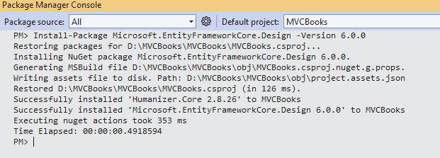Kế tiếp thực hiện lệnh:
Install-Package Microsoft.EntityFrameworkCore.SqlServer -Version 6.0.0
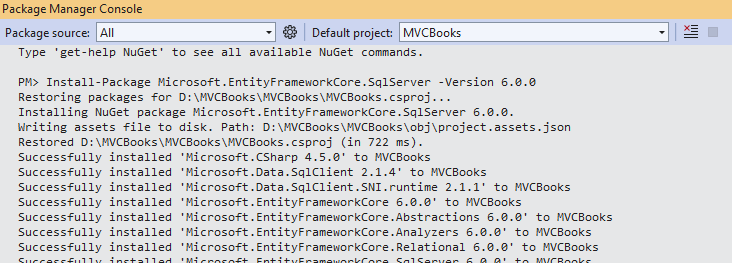Các lệnh trên cài đặt nhà cung cấp SQL Server của EF Core. Gói nhà cung cấp cài đặt gói EF Core như một sự phụ thuộc. Các gói cài đặt các tiện ích cho quá trình 'scaffold' mô hình dữ liệu phần tiếp theo.
Khái niệm “scaffolding” không quá xa lạ nếu chúng ta đã từng làm quen với EF (trong nền tảng .NET Framework). Hiểu một cách đơn giản, trong nhiều dự án luôn có những đoạn mã được sử dụng lặp lại nhiều lần tại nhiều nơi khác nhau với thay đổi rất ít hoặc không thay đổi gọi là Boilerplate code (https://en.wikipedia.org/wiki/Boilerplate_code ). Sẽ là mất thời gian nếu mỗi lần bắt đầu một dự án mới lại phải tạo lại đoạn mã đã dùng trong dự án khác. Một kỹ thuật được gọi là “scaffolding” sẽ tạo ra một khung thô (rough skeleton) hay mẫu (template) cho phép các dự án sao chép một cách nhanh chóng. Khi làm việc với dữ liệu, các thao tác chủ yếu sẽ là tạo dữ liệu (Create), đọc dữ liệu (Read), cập nhật dữ liệu (Update) và xóa dữ liệu (Delete) và được sử dụng lặp lại trong nhiều dự án ASP.NET. Visual Studio cho phép phát sinh tự động các trang thực hiện các thao tác trên dựa trên mô hình dữ liệu (trong dự án chúng ta là lớp Book) gọi là scaffolding. Trong Solution Explorer, nhấn chuột phải vào thư mục Controllers chọn Add > New Scaffolded Item…Khái niệm 'scaffolding' không quá xa lạ nếu chúng ta đã từng làm quen với EF (trong nền tảng .NET Framework). Hiểu một cách đơn giản, trong nhiều dự án luôn có những đoạn mã được sử dụng lặp lại nhiều lần tại nhiều nơi khác nhau với thay đổi rất ít hoặc không thay đổi gọi là Boilerplate code. Sẽ là mất thời gian nếu mỗi lần bắt đầu một dự án mới lại phải tạo lại đoạn mã đã dùng trong dự án khác. Một kỹ thuật được gọi là “scaffolding” sẽ tạo ra một khung thô (rough skeleton) hay mẫu (template) cho phép các dự án sao chép một cách nhanh chóng.
Khi làm việc với dữ liệu, các thao tác chủ yếu sẽ là tạo dữ liệu (Create), đọc dữ liệu (Read), cập nhật dữ liệu (Update) và xóa dữ liệu (Delete) và được sử dụng lặp lại trong nhiều dự án ASP.NET. Visual Studio cho phép phát sinh tự động các trang thực hiện các thao tác trên dựa trên mô hình dữ liệu (trong dự án chúng ta là lớp Book) gọi là scaffolding.
Trong Solution Explorer, nhấn chuột phải vào thư mục Controllers chọn Add > New Scaffolded Item...
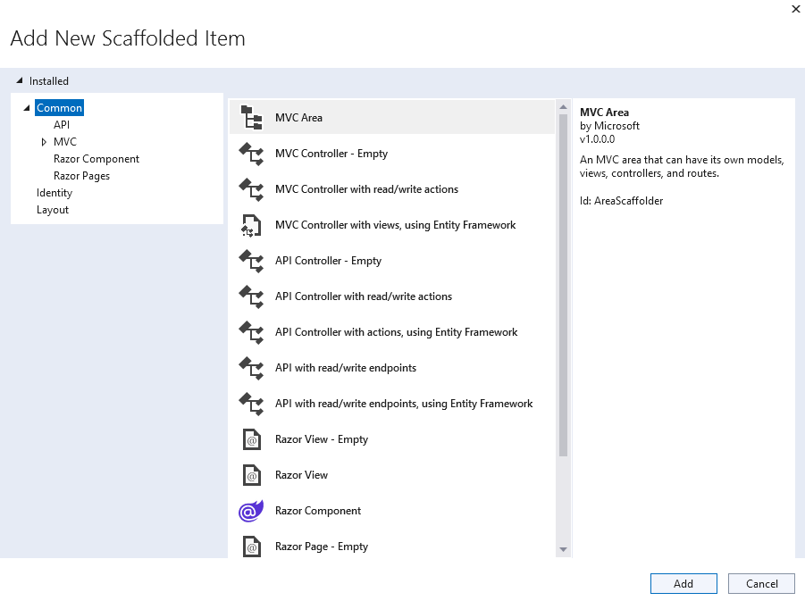Chúng ta có thể thấy rằng có rất nhiều các template đã được tạo sẵn (scaffolding) cho phép sử dụng nhanh chóng trong các dự án ASP.NET Core. Bài viết này chúng ta sẽ chọn MVC từ khung bên trái và chọn template MVC Controller with views, using Entity Framework
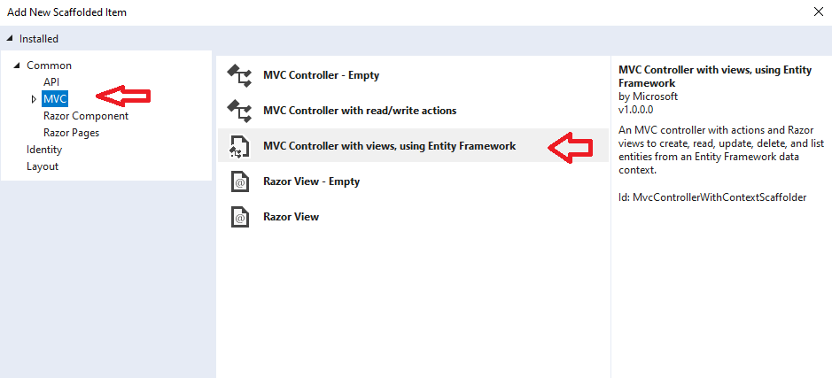Nhấn nút Add. Hộp thoại xuất hiện, chọn Book (MVCBooks.Models) tại mục Model class:
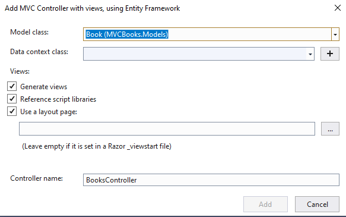Tại mục Data context class nhấn dấu + bên phải sẽ xuất hiện hộp thoại Add Data Context và chọn giá trị mặc định trong ô New data context type và nhấn nút Add:
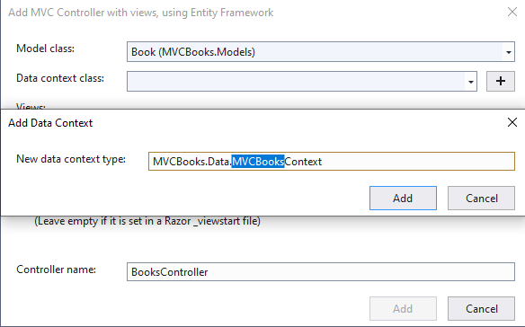Các mục khác giữ mặc định:
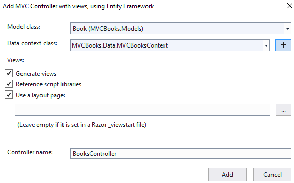Nhấn nút Add sẽ diễn ra quá trình Scaffolding. Lỗi sau có thể xuất hiện:
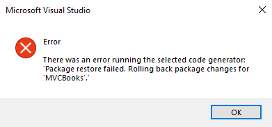Lỗi trên xuất hiện khả năng là do hai phiên bản Microsoft.EntityFrameworkCore.SqlServer và Microsoft.EntityFrameworkCore.Design không giống nhau. Để kiểm tra chúng ta vào cửa sổ Solution Explorer, vào mục Dependencies > Packages có thể chúng ta thấy hai phiên bản khác nhau ví dụ: Microsoft.EntityFrameworkCore.Design (6.0.0) và Microsoft.EntityFrameworkCore.SqlServer (6.0.23). Chúng ta cần cập nhật lại Microsoft.EntityFrameworkCore.Design từ phiên bản 6.0.0 đến 6.0.23 (Nghĩa là cập nhật phiên bản của Design theo phiên bản SqlServer).
Nếu lỗi vẫn xảy ra có thể tham khảo thêm tại đây.
Quá trình scaffolding:
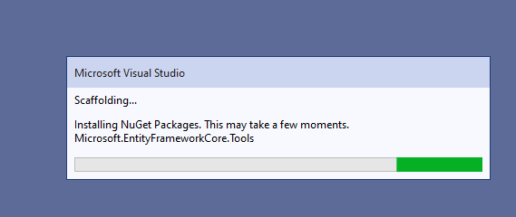Lúc này Visual Studio sẽ tạo ra các thành phần sau:
Một thư mục Data chứa lớp MVCBooksContext.cs – lớp ngữ cảnh cơ sở dữ liệu EF Core ( EF Core database context class)
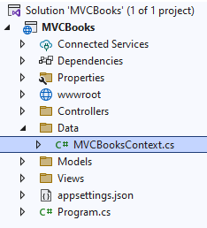Lớp MVCBooksContext xác định các tính năng của EF Core như Create, Read, Update, Delete,…cho mô hình Book. Lớp này được thừa kế từ lớp Microsoft.EntityFrameworkCore.DbContext
Một thuộc tính DbSet<MVCBooks.Models.Book> được tạo cho một tập entity (entity set). Trong EF, một tập entity tương ứng một bảng (table) trong cơ sở dữ liệu quan hệ. Một tập entity chứa nhiều entity và mỗi entity tương ứng với một hàng (row) trong bảng. Tên của chuỗi kết nối (connection string) được chuyển đến context bằng cách gọi một phương thức trên một đối tượng DbContextOptions (options). Trong trường hợp phát triển cục bộ (local), hệ thống cấu hình ASP.NET Core đọc chuỗi kết nối từ tập tin appsettings.json:
Một lớp controller gọi là BooksController.cs trong thư mục Controllers
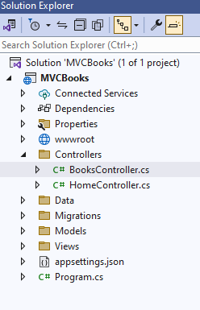Các tập tin Razor (*.cshtml ) trong thư mục Views / Books
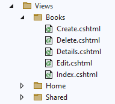Quá trình phát sinh tự động các thành phần này gọi là Scaffolding.
Lúc này nếu chúng ta vào Debug > Start Without Debugging sẽ truy cập trang tại địa chỉ https://localhost:7258/ (dùng cổng 7258). Kế tiếp truy cập đến Books theo địa chỉ https://localhost:7258/Books sẽ phát sinh lỗi
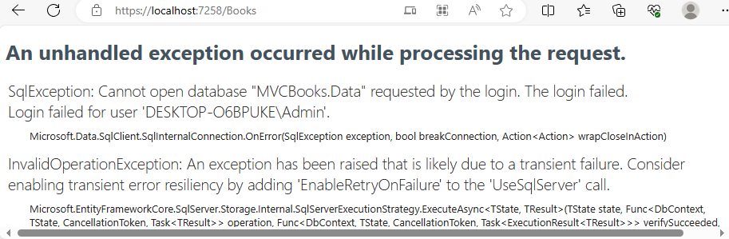Lỗi này yêu cầu chúng ta phải tạo một cơ sở dữ liệu và lúc này chúng ta sẽ sử dụng tính năng Migrations của EF Core. Tính năng Migrations cho phép tạo cơ sở dữ liệu khớp với lớp mô hình dữ liệu trong dự án (của chúng ta là lớp Book) và cập nhật lại lược đồ cơ sở dữ liệu khi mô hình dữ liệu thay đổi (ví dụ thêm hay xóa một trường trong lớp Book).
Bây giờ chúng ta sẽ thêm một cơ sở dữ liệu và cho phép cơ sở dữ liệu này cập nhật nếu mô hình dữ liệu thay đổi. Để làm điều này:
Trong mục Tools chọn NuGet Package Manager > Package Manager Console (PMC). Gõ
Add-Migration InitialCreate
Update-Database
Lệnh Add-Migration phát sinh mã tạo ra một lược đồ cơ sở dữ liệu khởi đầu. Lược đồ này dựa trên mô hình được xác định trong lớp MVCBooksContext. InitialCreate là tên của migration và chúng ta có thể đặt bất kỳ tên nào tùy thích. Lúc này sẽ xuất hiện một thư mục Migartions trong Solution Explorer
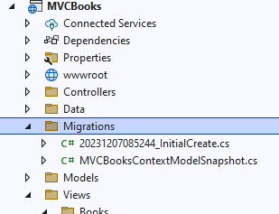Lệnh Update-Database thực thi phương thức Up trong tập tin ..._InitialCreate.cs
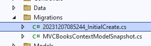ASP Core được xây dựng với DI (Dependency Injection) và các dịch vụ (như EF Core DB context) phải được đăng ký với DI khi ứng dụng thực thi. Các thành phần yêu cầu các dịch vụ (như các trang Razor) được cung cấp các dịch vụ này thông qua các tham số hàm tạo (constructor).
Trong dự án MVCBooks, một EF Core DB context được tạo tự động nhờ scaffolding (MVCBooksContext) và đăng ký nó với DI trong tập tin Program.cs:
Có thể thấy rằng, lớp MVCBooksContext được đăng ký đến DI nhờ phương thức AddDbContext. Cơ sở dữ liệu và chuỗi kết nối được xác định từ đối tượng DbContextOptions (options).
Controller (lớp BooksController từ tập tin Controllers / BooksController.cs) sử dụng MVCBooksContext thông qua tham số hàm tạo:
Lúc này, chúng ta có thể thực thi ứng dụng và gõ địa chỉ https://localhost:7258/Books
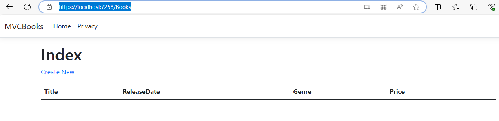Nhấn vào dòng Create New sẽ xuất hiện form:
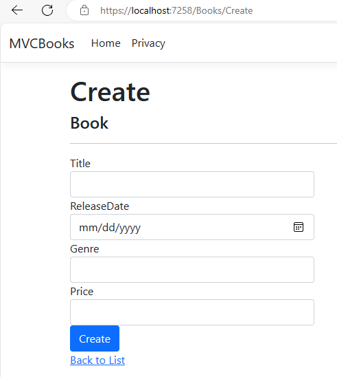Gõ một vài thông tin
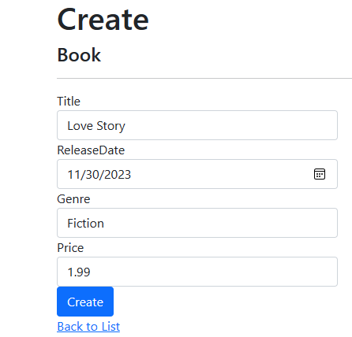và nhấn Create
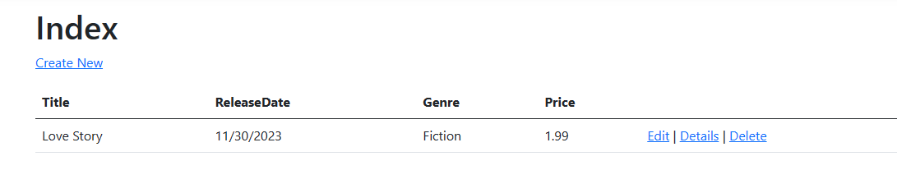Bây giờ nhấn liên kết Edit sẽ xuất hiện form:
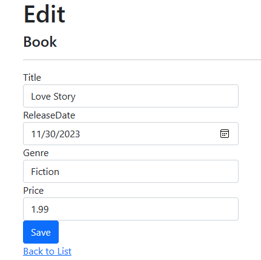Có thể thay đổi thông tin và nhấn Save. Nếu nhấn liên kết Details:
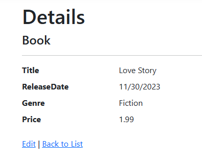Và có thể nhấn dòng Delete để xóa entity hiện có. Nhắc lại, mỗi một hàng thông tin về một cuốn sách là một entity.
Chúng ta đã được thấy giao diện các trang Index, Edit, Create, Details và Delete. Các trang Razor này được tạo ra trong thư mục Views / Books và chúng ta sẽ giải thích một chút về các trang này trong phần dưới. Bên cạnh đó, chúng ta cần tham khảo lại bài Thêm một View.
Như các bài về View và Controller đã đề cập, một controller sẽ chuyển dữ liệu hay đối tượng đến một view thông qua đối tượng ViewData. MVC cũng hỗ trợ chuyển các đối tượng mô hình kết buộc đến một kiểu cụ thể nào đó (còn gọi là strongly typed model objects) đến một view. Cách tiếp cận này cho phép kiểm tra thời gian biên dịch đoạn mã tốt hơn và cơ chế scaffolding cũng sử dụng cách tiếp cận này với lớp BooksController và các views.
Lướt qua phương thức Details từ tập tin Controllers / BooksController.cs
Tham số id là dữ liệu định tuyến (route data) với kiểu có thể null (nullable type) có thể chuyển qua URL bằng một trong hai cách: https://localhost:44307/books/details/1 hay https://localhost:44307/books/details?id=1
biểu thức lambda được chuyển trong FirstOrDefaultAsync để chọn các entity book khớp với id và nếu một book được tìm thấy, một thể hiện của lớp Book được chuyển đến Details.
Bây giờ lướt qua trang Details trong Views/Books/Details.cshtml
@model MVCBooks.Models.Book
Lệnh @model xác định kiểu của đối tượng mà view mong đợi (Book). Khi chúng ta tạo ra BooksController thì lệnh @model được tự động thêm tại đầu trang Details.
Lệnh @model cho phép chúng ta truy cập đến đối tượng book được chuyển đến view. Cụ thể, trong trang Details chúng ta truy cập đến các thuộc tính của đối tượng Book qua các trường DisplayNameFor và DisplayFor (còn gọi là các HTML Helper)
Tương tự, chúng ta có thể xem mối quan hệ giữa các phương thức hành động (action method) trong BooksController.cs như Index, Create, Edit, Delete và các view tương ứng như Index.cshtml, Create.cshtml,...
Task, async, await liên quan đến lập trình không đồng bộ trong C#. Có thể tham khảo thêm tại đây.